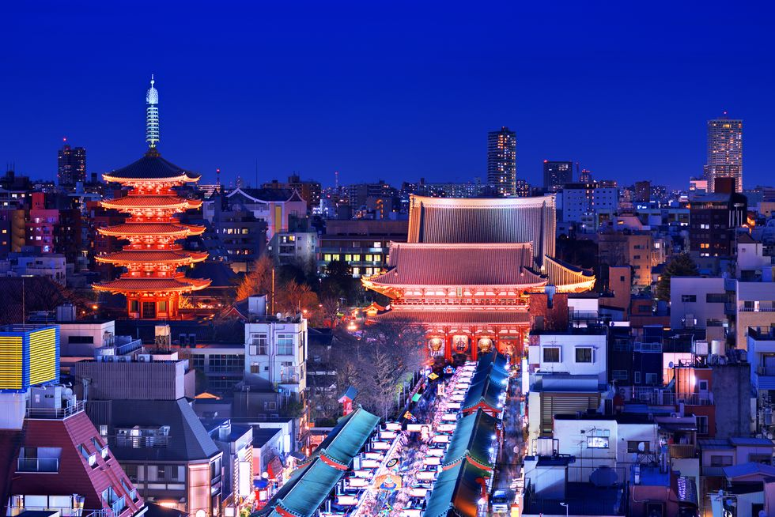
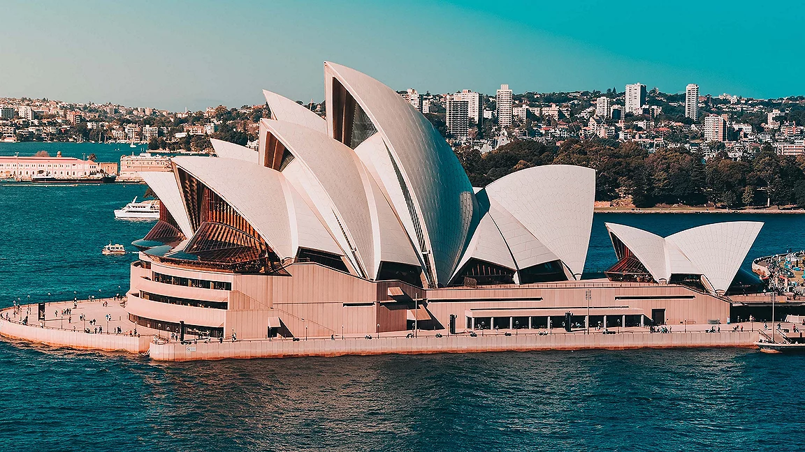

Париж - столиця Франції, відома своїми романтичними місцями та архітектурними шедеврами, такими як Ейфелева вежа та Лувр.
Париж є культурним центром Європи з численними музеями, парками та історичними пам'ятками. Не пропустіть шанс відвідати Версальський палац та прогулятися вздовж Сени.
Ейфелева вежа
Лувр
Нотр-Дам де Парі
Версальський палац
Тріумфальна арка
Токіо

Токіо - велике місто, яке поєднує в собі сучасні технології та традиційну японську культуру. Відвідайте токійську вежу та храм Сенсо-джі.
Токіо також відоме своїми сучасними районами, такими як Сібуя та Сіндзюку, де можна насолоджуватися нічним життям та шопінгом. Обов'язково спробуйте місцеву кухню!
Токійська вежа
Храм Сенсо-джі
Район Сібуя
Район Сіндзюку
Імператорський палац
Нью-Йорк
Нью-Йорк - одне з найбільших міст світу, відоме своєю культурною різноманітністю, театральним життям на Бродвеї та знаменитими хмарочосами.
Нью-Йорк - це місце, де можна відвідати Центральний парк, Метрополітен-музей та пройтися по Таймс-сквер. Це місто ніколи не спить і завжди пропонує щось цікаве.
Центральний парк
Метрополітен-музей
Таймс-сквер
Емпайр-стейт-білдінг
Статуя Свободи
Сідней

Сідней - найбільше місто Австралії, відоме своїм оперним театром та прекрасними пляжами. Ідеальне місце для любителів природи та урбаністики.
Сідней пропонує багато активностей, від серфінгу на Бонді-біч до прогулянок Королівським ботанічним садом. Відвідайте Сіднейську гавань та насолодіться захоплюючими видами.